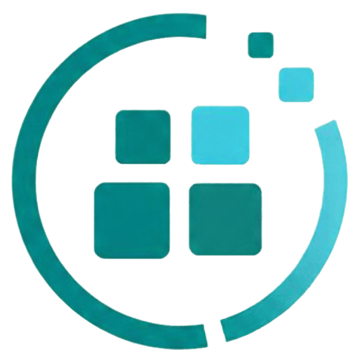
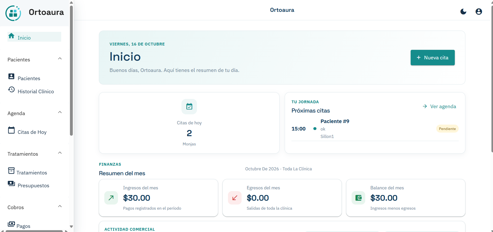
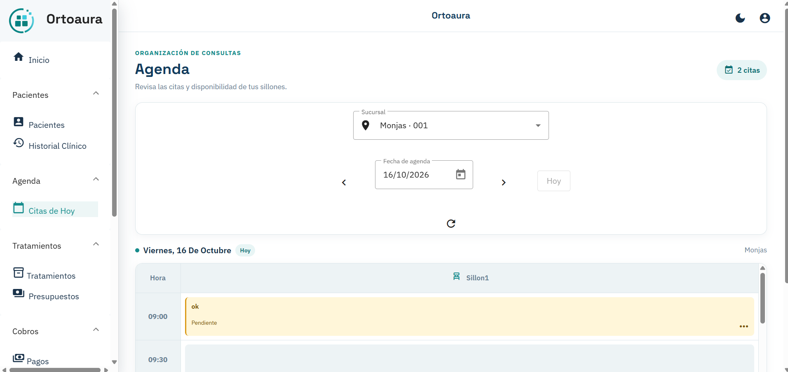
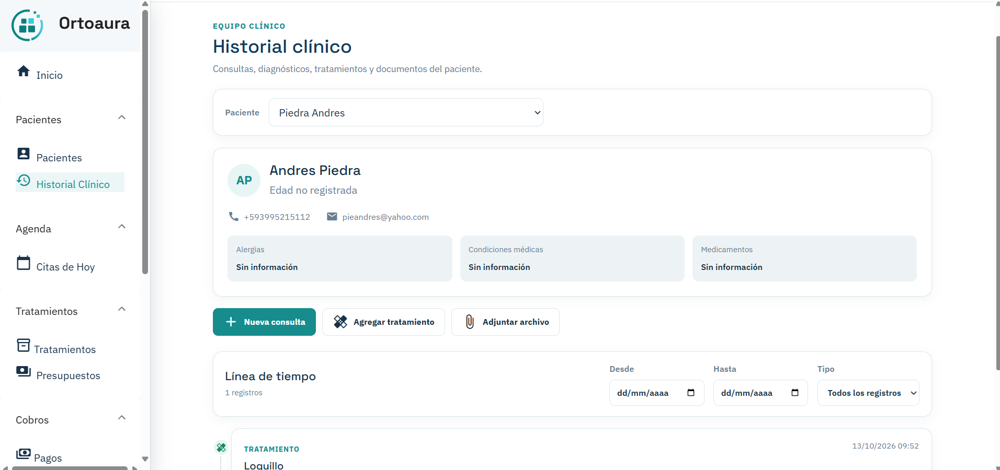

Páginas web a medida
Sitios profesionales, adaptables a móviles, preparados para buscadores y con contacto directo por WhatsApp.
Desde $250 USD / año Consultar mi proyecto ↗INTEGRACIÓN DE SISTEMAS · DESARROLLO · AUTOMATIZACIÓN
Desarrollo software, conecto sistemas y automatizo procesos.
Creador de OrtoAura
Ayudo a empresas y negocios a simplificar su operación mediante software, integraciones y automatización. Combino experiencia en desarrollo empresarial con la creación de productos digitales propios.
Full Stack developer with 10+ years of experience leading enterprise projects in Java, Spring Boot and Angular. Creator of Ortoaura, a dental practice management platform.
Qué puedo hacer por tu negocio
Tecnología práctica para mejorar tu presencia digital, conectar herramientas y optimizar procesos.
Sitios profesionales, adaptables a móviles, preparados para buscadores y con contacto directo por WhatsApp.
Desde $250 USD / año Consultar mi proyecto ↗Conexión de sistemas mediante APIs, webhooks, n8n y flujos de WhatsApp para reducir tareas manuales.
Soluciones según necesidad Hablemos de procesos ↗Aplicaciones empresariales para gestionar información, procesos y operaciones con tecnologías modernas.
Proyectos personalizados Cuéntame tu idea ↗
Producto propio
Software de gestión dental: pacientes, agenda, historial clínico, tratamientos, presupuestos y finanzas en un solo lugar.



Ficha clínica completa y seguimiento por paciente.
Citas por sillón y profesional, con estados en tiempo real.
Planes de tratamiento y cotizaciones claras para el paciente.
Ingresos, egresos y balance mensual de toda la clínica.
Mi rol: arquitectura, liderazgo técnico y desarrollo full stack end-to-end.
Trabajo y tecnología
Experiencia construyendo aplicaciones empresariales e integraciones para distintos contextos.
Plataforma de gestión para clínicas dentales, desde pacientes e historial clínico hasta agenda y finanzas.
Ver producto ↗Experiencia con Java, Spring Boot, APIs REST, webhooks, n8n, WhatsApp, Odoo y arquitectura de eventos.
Conversar sobre integración ↗Sobre mí
Soy Andrés Piedra, desarrollador de software con experiencia en aplicaciones empresariales, integración de sistemas y soluciones digitales.
Trabajo principalmente con Java y Spring Boot en backend, Angular en frontend y tecnologías de integración como APIs REST, webhooks, n8n y WhatsApp. También soy el creador de OrtoAura, producto que llevo desde la idea hasta su evolución como plataforma.
Me interesa construir soluciones útiles, mantenibles y alineadas con los problemas reales de cada organización.